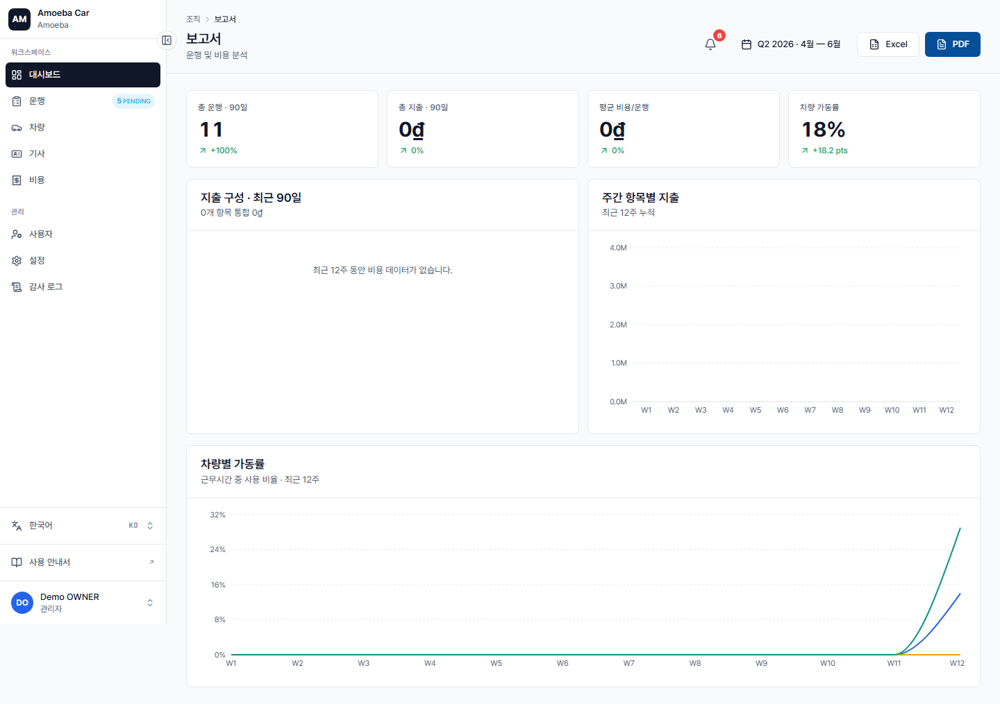

보고서 & 분석
- URL
/reports- 대상
- 관리자 전용 (매니저는 /costs에서 개인 보고서 생성)
4가지 KPI + 차트 그룹

1. 총합 KPI (카드 4개)
- 총 운행 수 (해당 기간) + 전기 대비 변화율(%)
- 총 비용 + 변화율
- 운행당 평균 비용 + 변화율
- 차량 가동률 (Fleet Utilization %)
2. 비용 구성 (도넛 차트)
총 지출 대비 8가지 비용 유형 비중 (FUEL/REPAIR/MEAL/OIL/ACCIDENT/PARKING/TOLL/INSPECTION).
3. 주간 비용 (누적 막대 차트)
최근 12주, 주요 4가지 유형 (Fuel/Repair/Meal/Oil)을 누적 표시 — 추이를 쉽게 파악 가능.
4. 차량 가동률 (선 차트)
주별 차량별 사용 시간 비율 — 어떤 차량이 과부하 / 어떤 차량이 유휴 상태인지 확인.
기간
현재 보고서는 최근 ~12주 고정 구간을 사용합니다. 페이지에 "기간" 버튼이 표시되지만 기간 선택기(월 / 분기 / 연 / 직접 설정)는 아직 작동하지 않습니다 — 개발 중입니다.
파일 내보내기
보고서 페이지의 "Excel 내보내기" 및 "PDF 내보내기" 버튼은 현재 작동하지 않습니다 (개발 중). 데이터가 필요하면 비용 관리(/costs) 페이지의 CSV 내보내기를 사용하세요.